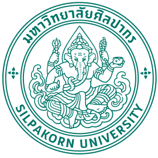

ประวัติความเป็นมา
มหาวิทยาลัยศิลปากร (อังกฤษ: Silpakorn University; อักษรย่อ: มศก. – SU) เป็นมหาวิทยาลัยศิลปะแห่งแรกของประเทศไทย และเป็นมหาวิทยาลัยแห่งที่ห้าของประเทศไทย แต่เดิมมีชื่อเสียงทางด้านศิลปะ การออกแบบ และสถาปัตยกรรม แต่ปัจจุบันเปิดสอนครอบคลุมทุกสาขาวิชา
มหาวิทยาลัยศิลปากร ถือกำเนิดจาก "โรงเรียนประณีตศิลปกรรม สังกัด กรมศิลปากร" ในรัชสมัยของ พระบาทสมเด็จพระปกเกล้าเจ้าอยู่หัว ได้พัฒนาขึ้นเป็นลำดับจนเป็น "โรงเรียนศิลปากร" และเมื่อวันที่ 12 ตุลาคม พ.ศ. 2486 ศาสตราจารย์ พระยาอนุมานราชธน (ยง เสฐียรโกเศศ) อธิบดีกรมศิลปากรขณะนั้น ได้พัฒนาหลักสูตรจนได้รับการยกฐานะขึ้นเป็น "มหาวิทยาลัยศิลปากร" ตั้งแต่ปี พ.ศ. 2559 เป็นต้นมา ได้เปลี่ยนมาบริหารจัดการแบบมหาวิทยาลัยในกำกับของรัฐ
สัญลักษณ์มหาวิทยาลัยศิลปากร

พระคเณศ เป็นเทพเจ้าแห่งความสำเร็จ ทั้งยังเป็นเทพแห่งศิลปวิทยาการและการประพันธ์ พระหัตถ์ขวาบนทรงตรีศูล พระหัตถ์ขวาล่างทรงงาช้าง พระหัตถ์ซ้ายบนทรงปาศะ (เชือก) พระหัตถ์ซ้ายล่างทรงครอบน้ำ ประทับบนบัลลังก์เมฆที่เขียนด้วยลายกนก ภายใต้มีอักษรว่า "มหาวิทยาลัยศิลปากร" โดยประกาศใช้เมื่อเดือนกรกฎาคม พ.ศ. 2494 ซึ่งคล้ายคลึงกับกรมศิลปากร
และเมื่อมหาวิทยาลัยศิลปากรปรับเปลี่ยนสถานภาพเป็นมหาวิทยาลัยในกำกับของรัฐ มหาวิทยาลัยได้มีประกาศใช้ตราสัญลักษณ์ใหม่แทนตราสัญลักษณ์ครุฑเพื่อใช้ในหนังสือราชการ หนังสือประทับตรา บันทึกข้อความ คำสั่ง และประกาศต่าง ๆ ของมหาวิทยาลัย โดยประกาศใช้เมื่อวันที่ 24 สิงหาคม พ.ศ. 2559
คติพจน์ : Ars longa vita brevis ศิลปะยืนยาว ชีวิตสั้น
สีประจำมหาวิทยาลัย : สีเขียวตั้งแช (สีเขียวเวอร์ริเดียน)
ปรัชญาของมหาวิทยาลัย : ศิลป์และศาสตร์ สร้างสรรค์ชาติยั่งยืน
วิสัยทัศน์ของมหาวิทยาลัย : บูรณาการศิลปะวัฒนธรรม และวิทยาศาสตร์เพื่อเสริมสร้างเศรษฐกิจเชิงสร้างสรรค์และนวัตกรรมสู่ความผาสุกและความยั่งยืนของสังคม